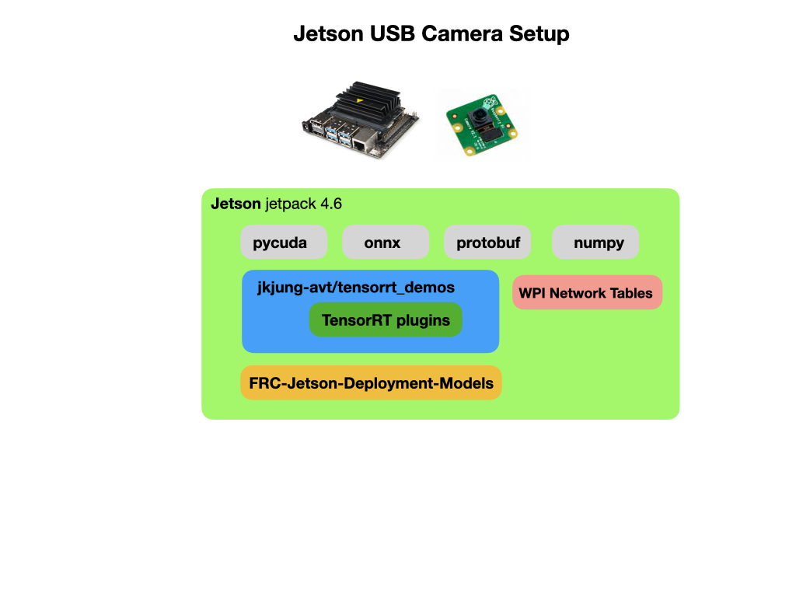

USB Camera Deployment for Jetson Nano
Since the Jetson has a GPU we can use a regular Pi or USB camera to detect the objects of interest. The deployment below uses Jetpack 4.6 as the base Jetson installation. In order to run on the Jetson’s CUDA GPU you need to convert the .weights file, that was created when you trained the Yolo model, into a TensorRT .trt file format. To setup the environment we need to do the following:
Install required packages for file convertion and inference.
Install the FRC deployment scripts for the Jetson Nano.
Convert the .weights file to a TensorRT file that will run on the Jetson GPU.
Run the inference script.

Installing Required Packages
Install tensorrt_demos. This set of demos is maintained by JK Jung. See his TensorRT YOLO For Custom Trained Models blog post for more information.
git clone https://github.com/jkjung-avt/tensorrt_demos.git
cd ${HOME}/tensorrt_demos
Install pycuda:
cd ${HOME}/tensorrt_demos/yolo
./install_pycuda.sh
Install protobuf by running this installation script or installing with pip:
sudo pip3 install protobuf
Install onnx version “1.4.1” (not the latest version) of python3 “onnx” module. Note that the “onnx” module would depend on “protobuf”.
sudo pip3 install onnx==1.4.1
Go to the “plugins/” subdirectory and build the “yolo_layer” plugin. When done, a “libyolo_layer.so” would be generated.
cd ${HOME}/tensorrt_demos/plugins
make
Installing the FRC Detection Scripts
In order to run the OAK-D camera and display the detected objects you need to deploy a custom python script that is specific to the type of detection model that you want to deploy. In our case, we’re going to use the YoloV4-Tiny model. The script will use a default model that detects various common objects and display the output to a Web URL. It’ll also place information about objects that have been detected into Network Tables so a it can be used by your WPILib java program.
To deploy the script follow these steps:
Clone the FRC models and python scripts from GitHub:
cd ${HOME}/tensorrt_demos
git lfs clone https://github.com/FRC-2928/FRC-Jetson-Deployment-Models.git
Install the python requirements for the FRC scripts. The requirements are pkgconfig, robotpy-cscore, and Pillow. robotpy-cscore installs the WPI Network Tables. This can take 10-15 minutes to install.
cd ${HOME}/tensorrt_demos/FRC-Jetson-Deployment-Models
python3 -m pip install -r requirements.txt
Move the FRC inference script to the parent directory:
cd ${HOME}/tensorrt_demos
cp FRC-Jetson-Deployment-Models/trt_yolo_wpi.py .
cp FRC-Jetson-Deployment-Models/wpi_helpers.py .
Doing the Conversion
The conversion scripts are in the following directory:
cd ${HOME}/tensorrt_demos/yolo
Convert weights file to ONNX:
python3 yolo_to_onnx.py -m yolov4
Convert ONNX file to TensorRT:
python3 onnx_to_tensorrt.py -m yolov4-416
Running Inference
A default model is supplied in the FRC-Jetson-Deployment-Models package that detects the Rapid-React balls from the 2022 competition. To use that model run the following commands. Make sure that the inference scripts have been moved to the ${HOME}/tensorrt_demos directory as stated above.
cd ${HOME}/tensorrt_demos
To run the inference using an attached Raspberry Pi camera.
cd ${HOME}tensorrt_demos
python3 trt_yolo_wpi.py --onboard 0 -m rapid-react
For a USB camera:
python3 trt_yolo_wpi.py --usb 1 -m rapid-react
You can display the output stream in a desktop gui window like this:
python3 trt_yolo_wpi.py --usb 1 -m rapid-react --gui
The Inference Script
This script connects to the USB camera and passes images to the inference model. If an object-of-interest is detected a bounding box is drawn on the image together with positional data. The positional data is put into the Network Tables so as it can be made use of by the WPILib robot program. The overlayed images can be viewed in a Web browser.
The python inference script can be found on FRC-2928 GitHub account. For a descripton of how this script works see The Inference Script Explained in this document.
References
JK Jung Tensorrt Demos - Github
JK Jung TensorRT YOLO For Custom Trained Models blog post